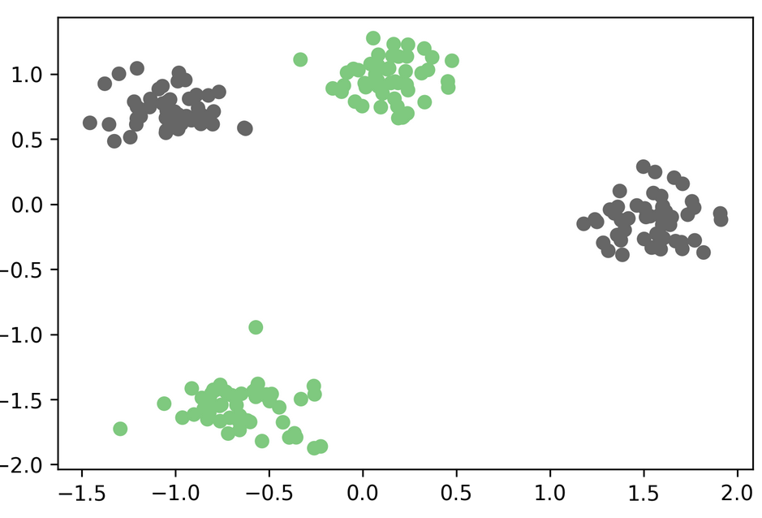
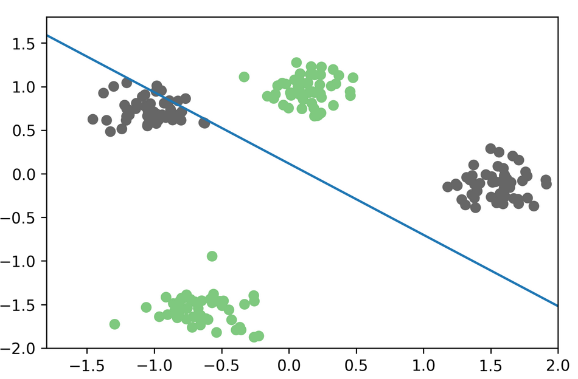
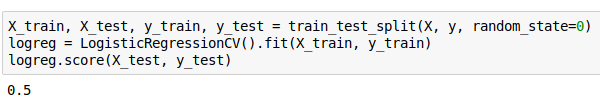
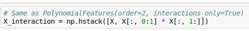
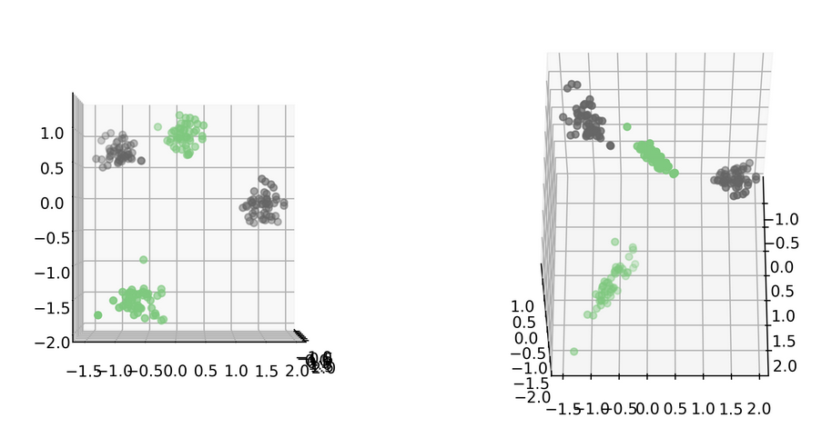
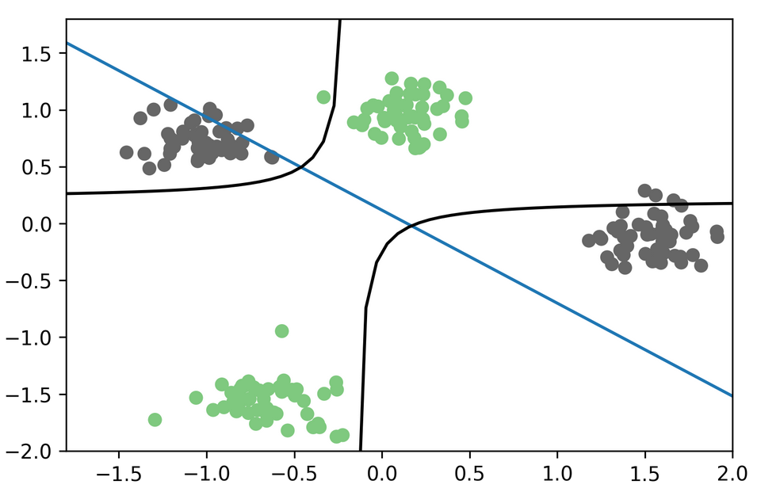
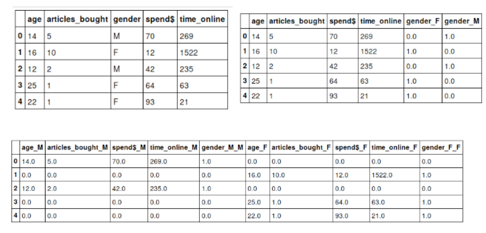
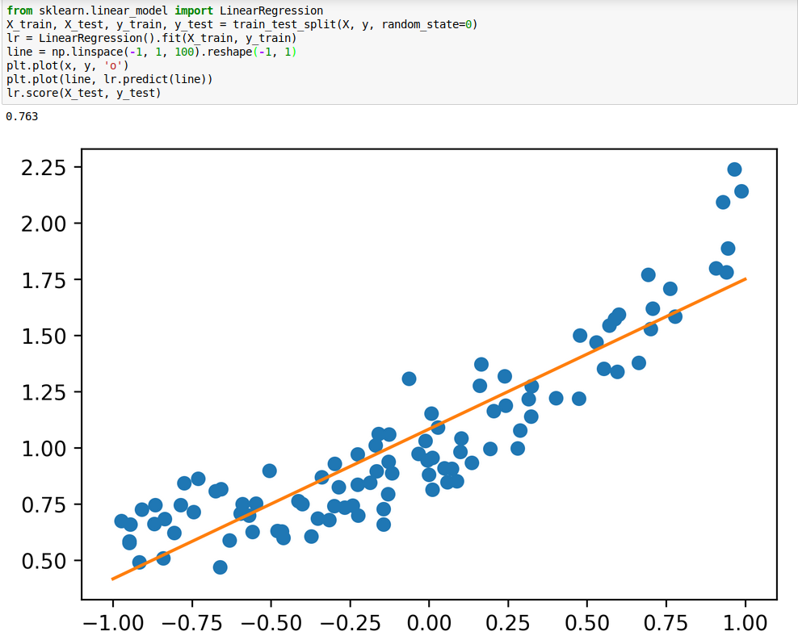
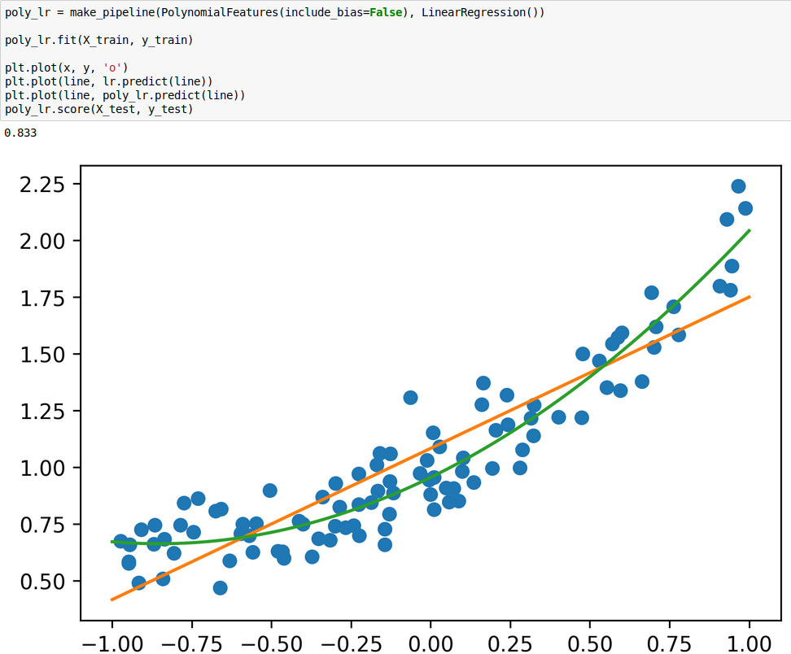

Coming up with features is difficult, time-consuming, requires expert knowledge. "Applied machine learning" is basically feature engineering.






X_i_train, X_i_test, y_train, y_test = train_test_split(
X_interaction, y, random_state=0)
logreg3 = LogisticRegressionCV().fit(X_i_train, y_train)
logreg3.score(X_i_test, y_test)
0.960

age articles_bought gender spend$ time_online + Male * (age articles_bought spend$ time_online ) + Female * (age articles_bought spend$ time_online ) + (age > 20) * (age articles_bought gender spend$ time_online) + (age <= 20) * (age articles_bought gender spend$ time_online) + (age <= 20) * Male * (age articles_bought gender spend$ time_online)


PolynomialFeatures() adds polynomials and interactions.make_pipeline!from sklearn.preprocessing import PolynomialFeatures
poly = PolynomialFeatures()
X_bc_poly = poly.fit_transform(X_bc_scaled)
print(X_bc_scaled.shape)
print(X_bc_poly.shape)
(379, 13) (379, 105)
scores = cross_val_score(RidgeCV(), X_bc_scaled, y_train, cv=10)
print2(np.mean(scores), np.std(scores))
(0.693, 0.111)
scores = cross_val_score(RidgeCV(), X_bc_poly, y_train, cv=10)
print2(np.mean(scores), np.std(scores))
(0.829, 0.071)